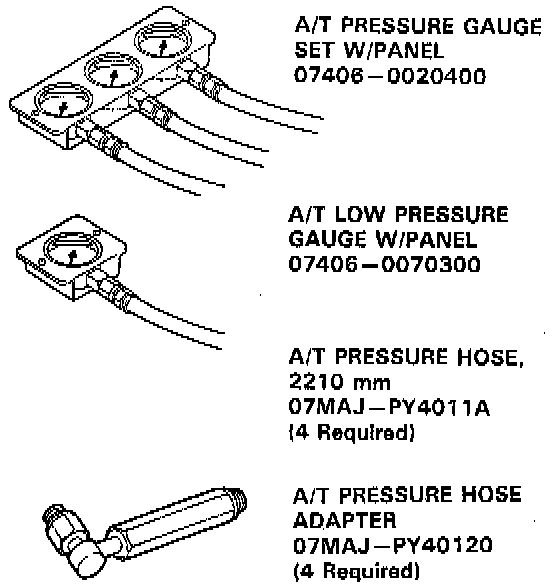
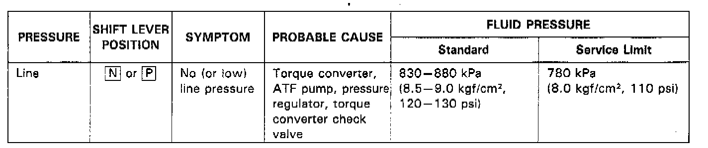
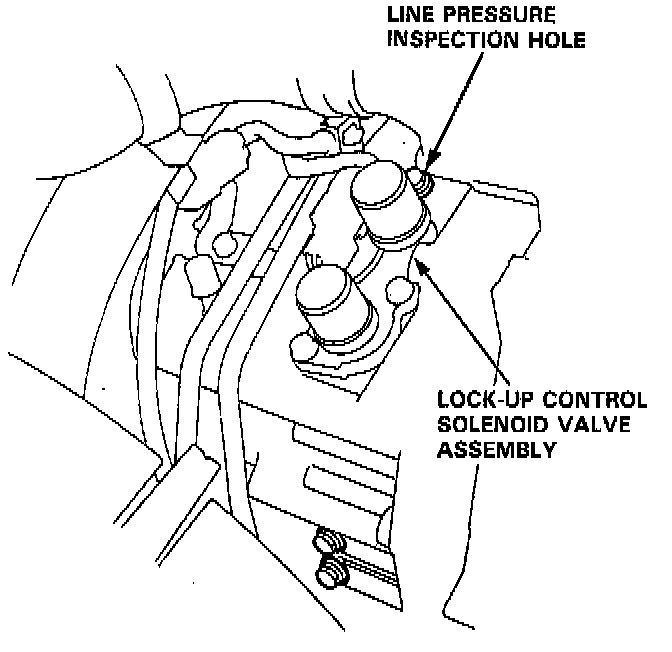
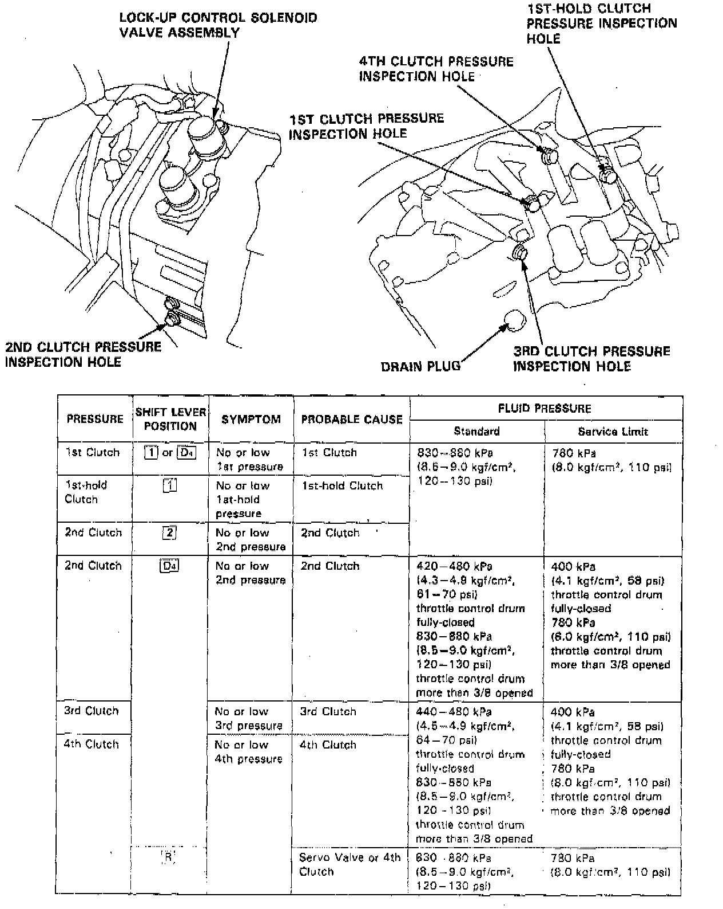
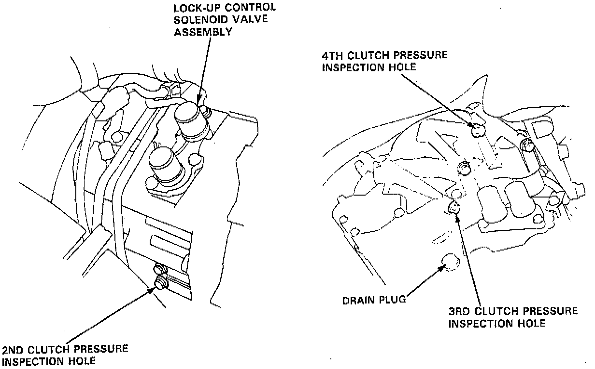
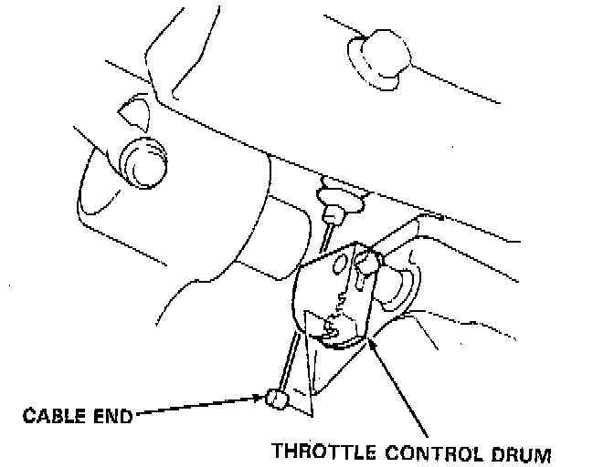
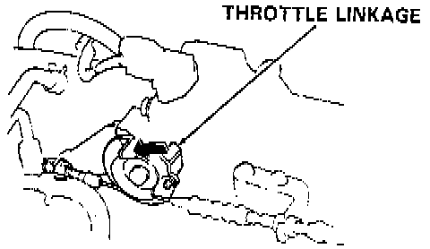
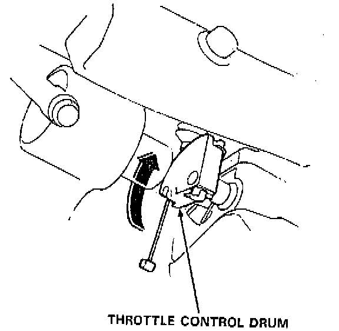
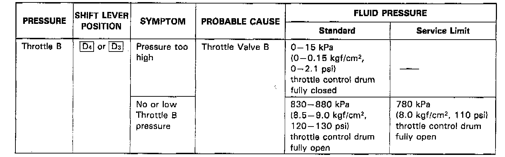
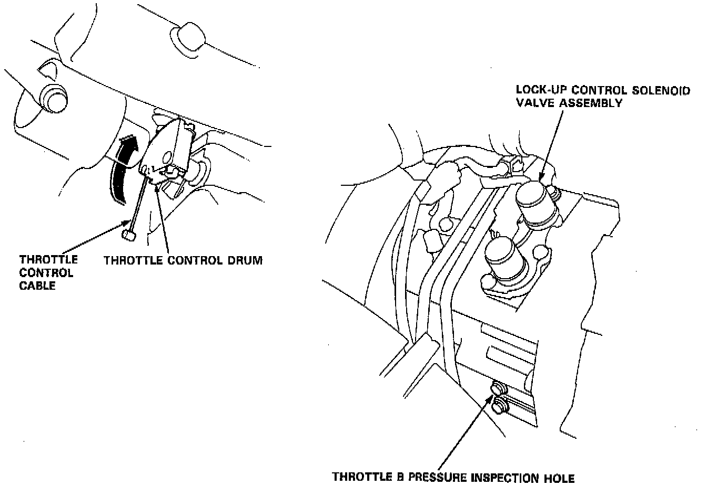

Pressure Tests
WARNING:- While testing, be careful of the rotating front wheels.
- Make sure lifts, jacks, and safety stands are placed properly.
CAUTION: Before testing, be sure the transmission fluid is filled to the proper level.
SYSTEM MEASURING
1. Raise the car.
2. Warm up the engine (the radiator fan comes on), then stop the engine and connect a tachometer.

3. Connect the special tool to each inspection hole(s).
- TORQUE: 18 Nm (13 ft. lbs.).
CAUTION: Connect the A/T pressure gauge securely, be sure not to allow dust and other foreign particles to enter the inspection hole.
NOTE: Use the A/T Pressure Gauge Set (07406- 0020003) or A/T Low Pressure Gauge (07406- 0070000), and the A/T pressure gauge hoses and adapters shown above.

4. Start the engine, and measure the respective pressures as follows.
- Line Pressure
- Clutch Pressure
- Clutch Low/High Pressure
- Throttle B Pressure
5. Install a new sealing washer and the sealing bolt in the inspection hole and tighten to the specified torque.
- TORQUE: 18 Nm (13 ft. lbs.).
NOTE: Do not reuse old sealing washers; always replace washers.

LINE PRESSURE MEASUREMENT
1. Set the parking brake, and block both rear wheels securely.
2. Run the engine at 2,000 rpm.
3. Shift to N or P position.
4. Measure line pressure.
NOTE: Higher pressures may be indicated if measurements are made in shift lever positions other than or position.

CLUTCH PRESSURE MEASUREMENT
WARNING: While testing, be careful of the rotating front wheels.
1. Set the parking brake, and block both rear wheels securely.
2. Raise the front of the car, and support it with safety stands.
3. Allow the front wheels to rotate freely.
4. Run the engine at 2,000 rpm.
5. Measure each clutch pressure.

CLUTCH LOW/HIGH PRESSURE MEASUREMENT
WARNING: While testing, be careful of the rotating front wheels.
1. Allow the front wheels to rotate freely.

2. Remove the cable end of the throttle control cable from the throttle control drum.
NOTE: Do not loosen the locknuts, simply unhook the cable end.
3. Start the engine and let it idle.
4. Shift to D4 position.

5. Slowly move the throttle linkage to increase engine rpm until pressure is indicated on the A/T pressure gauge. Then release the throttle linkage, allowing the engine to return to an idle, and measure the pressure reading.
6. With the engine idling, lift the throttle control drum up approximately 1/2 of its possible travel and increase the engine rpm until pressure is indicated on the gauge, then measure the highest pressure reading obtained.

7. Repeat steps 5 and 6 for each clutch pressure being inspected.

THROTTLE B PRESSURE MEASUREMENT
WARNING: While testing, be careful of the rotating front wheels.
1. Allow the front wheels to rotate freely.

2. Remove the cable end of the throttle control cable from the throttle control drum.
NOTE: Do not loosen the locknuts, simply unhook the cable end.
3. Shift to D4 or D3 position.
4. Run the engine at 1,000 rpm.
5. Measure fully-closed throttle B pressure.
6. Move the throttle control drum to fully-opened throttle position.
7. Measure fully-opened throttle B pressure.